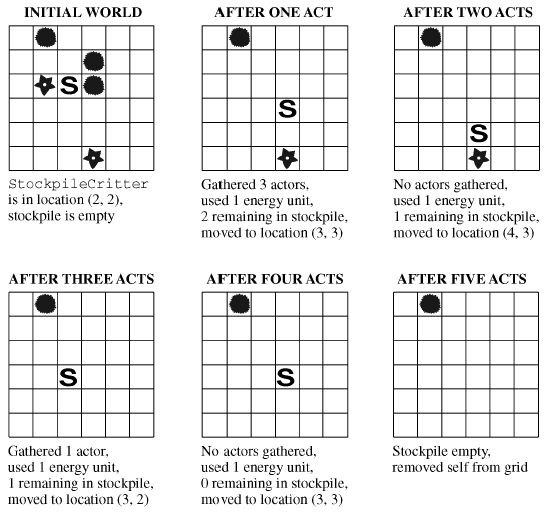
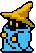
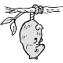

Extending Critter
RockerCritter
Create a Critter named RockerCritter. Override the makeMove method so that every time a RockerCritter moves, it places a Rock in the location it just was.
public static void main()
{
ActorWorld world = new ActorWorld();
world.add(new RockerCritter());
world.show();
}
StockpileCritter
A StockpileCritter is a Critter that uses other actors as a source of energy. Each actor represents one unit of energy. The StockpileCritter behaves like a Critter except in the way that it interacts with other actors. Each time the StockpileCritter acts, it gathers all neighboring actors by removing them from the grid and keeps track of them in a stockpile. The StockpileCritter then attempts to reduce its stockpile by one unit of energy. If the stockpile is empty, the StockpileCritter runs out of energy and removes itself from the grid.
You should have one int as an instance field. Override the processActors AND the makeMove methods.
Consider the following example situation:

public static void main()
{
ActorWorld world = new ActorWorld();
world.add(new Location(4,4),new StockpileCritter());
for(int r=3;r<=5;r++)
for(int c = 3;c<=5;c++)
if(c!=4||r!=4)
world.add(new Location(r,c),new Rock());
Bug a = new Bug();
Bug b = new Bug();
Bug c = new Bug();
Bug d = new Bug();
b.setDirection(Location.EAST);
c.setDirection(Location.SOUTH);
d.setDirection(Location.WEST);
world.add(new Location(6,6), a);
world.add(new Location(6,2), b);
world.add(new Location(2,2), c);
world.add(new Location(2,6), d);
world.show();
} WizardCritter

A WizardCritter is a Critter with the power to transform the Actors
immediately surrounding itself. The resulting Actor has the same color,
location, and direction as the original, but is a different type of Actor. Use
the following as a guideline.
a Bug becomes a Flower
a Flower becomes Rock
a Rock becomes a Bug
Once the WizardCritter has transformed the Actors, it moves like a normal
Critter. DO NOT OVERRIDE THE ACT METHOD! Read through the original act method
and decide which methods to override to get the proper results.
public static void main()
{
ActorWorld world = new ActorWorld();
world.add(new Location(4,4),new WizardCritter());
world.add(new Location(4,5),new Bug(Color.GREEN));
world.add(new Location(4,3),new Rock(Color.BLACK));
world.add(new Location(3,4),new Flower(Color.CYAN));
world.show();
}
OpossumCritter 
An opossum is an animal whose defense is to pretend to be dead. An
OpossumCritter classifies its neighbors as friends, foes, or neither. It is
possible that a neighbor is neither a friend nor a foe; however, no neighbor is
both a friend and a foe. If the OpossumCritter has more foes than friends
surrounding it, it will simulate playing dead by changing its color to black and
remaining in the same location. Otherwise, it will behave like a Critter. If the
OpossumCritter plays dead for three consecutive steps, it is removed from the
grid.
An Actor is a friend if its color is orange, and a foe if its color is green.
public static void main()
{
ActorWorld world = new ActorWorld();
world.add(new Location(4,4),new OpossumCritter());
world.add(new Location(3,4),new Rock(Color.ORANGE));
world.add(new Location(5,3), new Rock(Color.GREEN));
world.add(new Location(5,4), new Rock(Color.ORANGE));
for( int i=0; i<20; i++)
{
Rock r = new Rock(Color.GREEN);
world.add(r);
}
for( int i=0; i<20; i++)
{
Rock r = new Rock(Color.ORANGE);
world.add(r);
}
world.show();
}